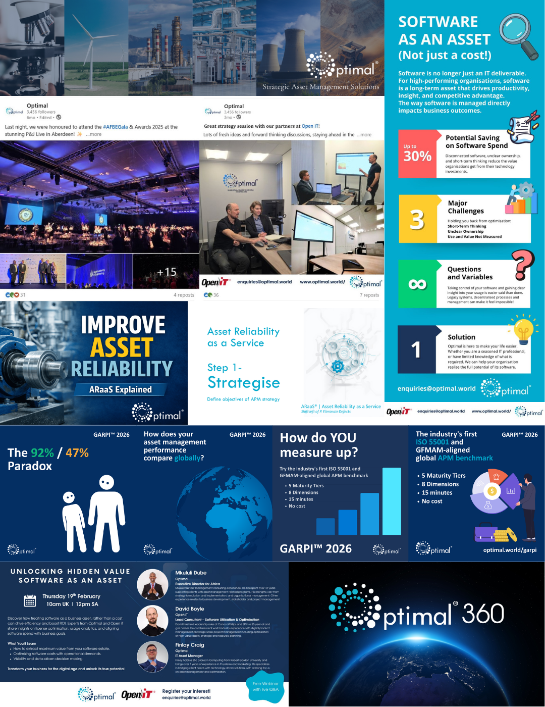

Marketing
Created campaign visuals, social media assets, event and webinar graphics, infographics and branded promotional content for Optimal. The work supported service campaigns such as software as an asset, GARPI and reliability-focused messaging, combining day-to-day marketing needs with polished external-facing collateral.

Website Development
Designed and updated website content for Optimal, shaping page layouts, editing live content and improving how services, sectors and case studies were presented online. This included homepage sections, service pages and other web content aimed at giving the brand a clearer and more professional digital presence.

Project Management and Presentations
Produced presentation decks, workshop materials, project visuals and reporting content used to explain ideas, support client conversations and track delivery progress. This included planning graphics, S-curves, programme visuals and slide design that turned complex information into something clear and easy to present.

Coding and AI Automation
Supported internal development and process improvement work through hands-on coding, HTML and CSS editing, automation workflows and AI-assisted tools. This covered practical delivery improvements such as workflow design, repository work, meeting-minutes automation and other solutions that reduced manual effort and sped up repeat tasks.

Video Editing
Edited branded video content for explainers, campaigns and digital communication, bringing together timeline editing, graphics, screen content and finishing touches such as colour work and sequencing. The work supported both promotional output and more informative content around Optimal's services and methods.